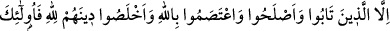
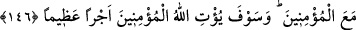
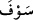

söylenmiştir. Tarla faresinin iki yuvası olur. Birinden yakalanmak istendiği zaman
öbüründen kaçar.
O gün azaptan kurtarmak ve cehennemin en alt tabakasından çıkarmak için “artık
onlara aslâ bir yardımcı bulamazsın.”
Buradaki hitap, kim olursa olsun hitâba elverişli olan herkesedir.
146- Ancak tevbe edip hallerini düzeltenler, Allah’a sımsıkı sarılıp dinlerini
(ibâdetlerini) yalnız O’nun için yapanlar başkadır. İşte bunlar mü’minlerle
berâberdirler ve Allah mü’minlere yakında büyük mükâfât verecektir.
“Ancak” nifaktan “tevbe edip” kendilerini nifaka düşüren amelleri terkedip de kalbin
ve bedenin amellerinden şerîatın güzel gördüğü davranışları yaparak “hallerini
düzeltenler, Allah’a”, dînine ve tevhîde “sımsıkı sarılıp dinlerini yalnız O’nun için
yapanlar” O’na itâatle yalnız rızâsını kastedenler “başkadır. İşte bunlar”, bu seçkin
sıfatları taşıyanlar, kendilerine cennetler va’dedilen ve asla nifâka düşmemiş olan
“mü’minlerle berâberdirler. Onlar, cennetin ulvî derecelerinde mü’minlerle berâber
bulunurlar. Önceden nifâka düşmüş olmaları buna mâni olmaz. Bunu, âyetteki şu ifâde
bildirmektedir:
“Allah mü’minlere yakında büyük mükâfât verecektir.” Va’dedilen o büyük ecrin
miktarı bilinemez. Nifakı terkedenler de buna ortaktır ve hisselerine düşeni alırlar.
Âyette geçen “__WORD__” kelimesi, ümit vermek anlamındadır. Allah’a isnâd edildiğinde
kesinlik ifâde eder. Çünkü O, ikramda bulunanların en cömerdidir. Kerim olanın vaadi
kesinlik ifâde eder.
Bil ki, kâfir küfür pasıyla, rûhunun safiyetini kirletse, fakat buna nifak pasını ilave
etmese küfür pasının kalbinden lisanına çıkmasına bir yol vardır. O kimse küfrünü izhâr
edince lisanından küfür buharı dışarı çıkar. Münâfığın durumu ise farklıdır. Onun içinde
küfür pasından fazla olarak bir de nifak pası vardır. Küfrü, lisanına aksetmemektedir.
Küfür ve nifak paslarının buharları kalbinin, gayba açılan kapısından nüfûz eder ve
orada birikir. Böylece kalbin kapısı kapanır ve rûhânî sâfiyet istidâdını tamâmen ifsâd
etmiş olmakla o kalb mühürlenir. Artık onun aşağıların aşağısı âlemden çıkış yolları
kapanmıştır. Onu çıkarabilecek bir yardımcı da yoktur. O, orada terkedilmiş bir halde,
Hak’tan uzak ve en son saftadır.
Allah Teâlâ şöyle buyurmuştur: “Eğer Allah size yardım ederse, artık size üstün
gelecek yoktur. Ve eğer sizi yüzüstü bırakırsa, ondan sonra artık size kim yardım
edecek? Mü’minler Allah’a dayansınlar.” (Âl-i İmran, 3/160)